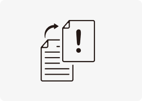
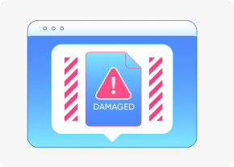

개념 학습
정보 보안 위협 요소
정보 보안을 위협하는 유형에는 위조, 변조, 접근과 유출, 훼손과 파괴 등이 있으며, 이러한 위협 유형들을 예방하지 않으면 개인의 정보 유출은 물론 경제적으로 큰 문제를 일으킬 수 있다.
정보 보안 위협 요소의 유형
-
위조거짓 정보를 정확한 정보처럼 보이게 하는 행위이다.
-
변조원래의 정보를 다른 내용으로 바꾸는 행위이다.
-
접근과 유출허락받지 않은 사람이 정보를 확인하거나 외부로 내보내는 행위이다.
-
훼손과 파괴정보를 변경하거나 파괴하여 정상적인 작동을 하지 못하게 하는 행위이다.